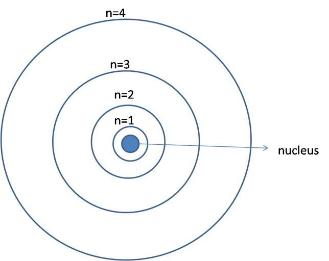
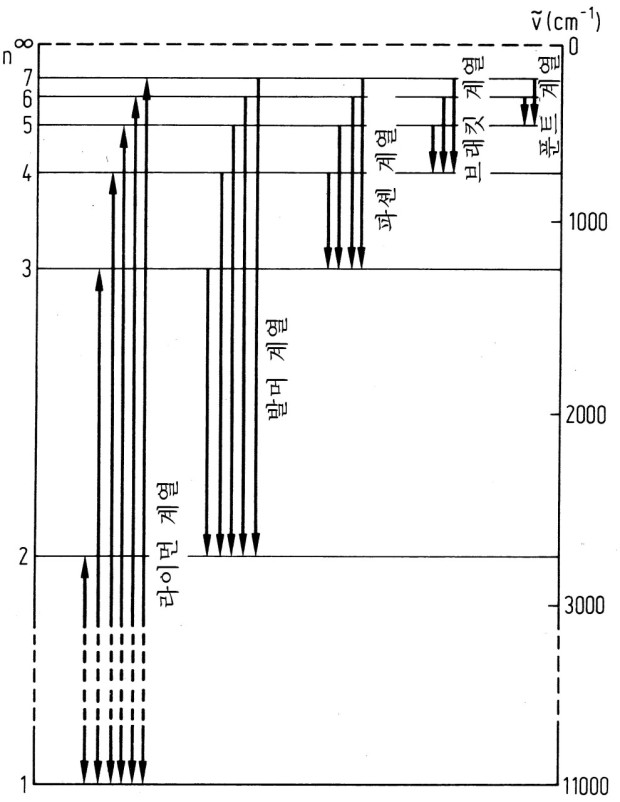

1913년 덴마크의 물리학자 닐스 보어가 제시한 원자모형이다. 러더퍼드의 원자모형의 단점을 해결하는 원자모형이었다.
보어는 자신의 원자모형을 설명하며 2가지 가설을 세웠다.
조건1: 양자조건
양자조건은 에너지가 연속적이지 않고 불연속적이라는 것을 설명하는 것이었다. 보어는 전자가 특정 궤도에만 존재하고,
이 때 전자가 원자핵에서 떨어진 정도를 자연수로 나타내어 주양자수라고 하며, n=1,2,3,...으로 나타낸다. 또, 각 궤도
마다 에너지를 불연속적으로 가지고있다. 이 에너지의 값을 에너지준위라고 하며, -에너지이다. 이 에너지준위는 주양자수에
따라 불연속적으로 가지고있다. 에너지준위는 원자핵에서 멀어질 수록 크기는 작아진다. 에너지 준위가 0인 곳은 n=∞인 곳이다.

조건2: 진동수조건
전자는 특정 에너지(전자기파: 빛)를 받으면 높은 에너지준위 궤도를 도는데, 이것을 전이 또는 양자도약이라고 한다.
(특정 에너지를 받으면, 궤도는 불연속적으로 변한다. 또, E=ℎf에 의해 진동수가 큰 빛을 받을 수록 에너지는 받는 증가한다.)
전이는 에너지를 받았을 때만 일어나는 것이 아니라 에너지를 잃었을 때도 일어나게 된다.
또한, 에너지준위가 E₁인 상태에서 에너지준위가 E₂인 곳으로 전이할 때, 흡수하거나 방출하는 에너지는 다음과 같다.
|E₁-E₂|=ℎf=ℎc/λ
(ℎ: 플랑크 상수, f: 빛의 진동수, c: 광속, λ: 빛의 파장)
위의 식에 따라 진동수가 큰 빛을 흡수/방출 할 수록 전이하는 에너지준위의 차이가 더 커진다.
전자가 전이할 때, 방출하는 빛은 어느 에너지준위로 전자가 전이하느냐에 따라 달라진다.
n=1(바닥 상태) 로 전자가 모두 전이할 때: 라이먼 계열. 자외선 방출
n=2 로 전자가 모두 전이할 때: 발머 계열. 가시광선 방출
n=3 으로 전자가 모두 전이할 때: 파셴 계열. 적외선 방출
n=4 로 전자가 모두 전이할 때: 브래킷 계열. 적외선 방출
n=5 로 전자가 모두 전이할 때: 푼트 계열. 적외선 방출

위 계열들과 파장 관계식은 다음과 같다.
1/λ=R(1/m²-1/n²) 단, n < m이다. m은 각 계열들의 위치이고, n은 전이 전 에너지준위이다. R은 뤼드베리 상수로 약 1.097373
156853 10⁷m^(-1)이라고 한다.
보어의 양자조건으로 구한 수소원자의 에너지준위는 다음과 같다.
En=-13.6/n²(eV) 단, n은 주양자수이다.